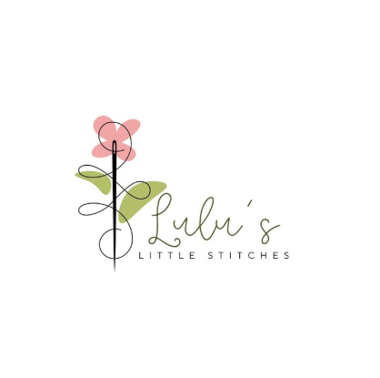

Handmade With Love
Hi, I'm SZ. I stitch whenever I have a spare minute. Lulu's Little Stitches is my small embroidery studio where I turn tangles into treasures. I make custom pieces that feel personal, thoughtful, and made just for you.
With Lulu's Little Stitches, you can add your personalized touch to create unique and thoughtful gifts for the ones you love. I specialize in embroidering clothes and accessories for little ones.
I hope you like Lulu's Little Stitches as much as I love stitching!